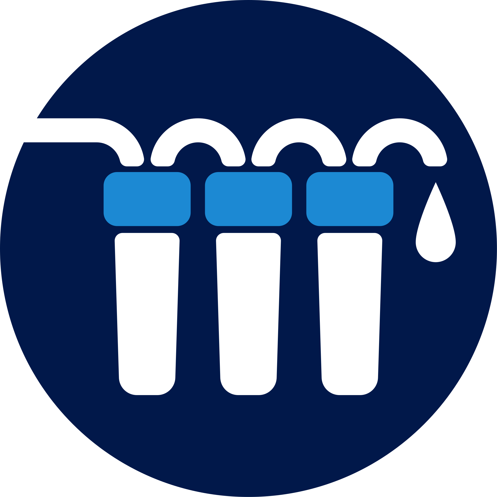

Filtry odwróconej osmozy (RO)
Najskuteczniejsza metoda oczyszczania wody pitnej – usuwa do 99% zanieczyszczeń, w tym bakterie, metale ciężkie i mikroplastik.

Profesjonalny montaż filtrów odwróconej osmozy, zmiękczaczy wody i stacji uzdatniania.
Obsługujemy Gorzów Wielkopolski i całe województwo lubuskie.
Firma Filtry Do Wody – Gorzów specjalizuje się w kompleksowym uzdatnianiu wody pitnej i użytkowej. Pomagamy mieszkańcom regionu poprawić jakość wody, oferując nowoczesne rozwiązania dopasowane do indywidualnych potrzeb.
Najskuteczniejsza metoda oczyszczania wody pitnej – usuwa do 99% zanieczyszczeń, w tym bakterie, metale ciężkie i mikroplastik.
Trwałe rozwiązanie problemu twardej wody i kamienia kotłowego dla całego domu lub firmy.
Kompleksowe systemy filtracyjne dla właścicieli studni – dobierane indywidualnie na podstawie badań wody.
Filtr RO (Reverse Osmosis), czyli filtr odwróconej osmozy, to zaawansowany system oczyszczania wody, który wykorzystuje półprzepuszczalną membranę do zatrzymywania zanieczyszczeń na poziomie molekularnym. To jedna z najdokładniejszych metod filtracji dostępnych na świecie – usuwa nawet takie cząsteczki, których nie zatrzymują standardowe filtry węglowe czy mechaniczne.
System odwróconej osmozy usuwa z wody między innymi:
Woda po filtrach RO jest czysta, lekka, idealna do picia, gotowania oraz przygotowywania posiłków.
Membrana osmotyczna usuwa z wody do 98–99% wszystkich zanieczyszczeń. To poziom czystości, którego nie gwarantują żadne tradycyjne systemy filtracji. Dlatego uzdatnianie metodą RO jest standardem wszędzie tam, gdzie wymagana jest najwyższa jakość wody – w szpitalach, laboratoriach i przy produkcji żywności dla niemowląt.
Technologia odwróconej osmozy została opracowana w latach 50. XX wieku, a od lat 60. stosowana jest na szeroką skalę, między innymi w odsalarniach wody morskiej w USA. Obecnie uznawana jest za najbardziej skuteczną i najbezpieczniejszą metodę oczyszczania wody, używaną zarówno w przemyśle spożywczym, medycznym i farmaceutycznym, jak i w gospodarstwach domowych.
Jeśli chcesz mieć w domu wodę najwyższej jakości – czystą, zdrową i pozbawioną szkodliwych substancji – filtr RO to najlepszy wybór. Skontaktuj się z nami i dobierzemy dla Ciebie odpowiedni model.
Zmiękczacz wody użytkowej to urządzenie, które usuwa z wody jony wapnia i magnezu odpowiedzialne za jej twardość, czyli powstawanie kamienia kotłowego. Dzięki procesowi wymiany jonowej twarda woda zostaje zastąpiona wodą miękką, bezpieczną dla instalacji, urządzeń i codziennego użytkowania w domu.
To obecnie najskuteczniejsza i praktycznie jedyna metoda realnego usuwania kamienia z wody – a nie tylko jego maskowania, jak w przypadku filtrów mechanicznych czy magnetyzerów.
Zmiękczacz eliminuje problem twardej wody w całym budynku:
Miękka woda działa w całym domu – w kuchni, łazience i kotłowni.
Zmiękczacz usuwa do 100% twardości węglanowej i niewęglanowej, redukując stężenie wapnia i magnezu niemal do zera. To poziom, którego nie zapewniają inne rozwiązania dostępne na rynku. Problem kamienia znika u źródła, a nie tylko na powierzchni urządzeń.
Magnetyzery, filtry węglowe czy mechaniczne nie usuwają twardości wody – robi to wyłącznie zmiękczacz pracujący na żywicy jonowymiennej.
Jeśli chcesz raz na zawsze pozbyć się problemu twardej wody, zmiękczacz wody użytkowej to najlepsze i jedyne skuteczne rozwiązanie dla całego domu. Skontaktuj się z nami – dobierzemy urządzenie do Twoich potrzeb.
Stacja uzdatniania wody studziennej to kompleksowy system filtracyjny, którego zadaniem jest poprawa jakości wody pochodzącej z własnego ujęcia – studni kopanej lub głębinowej. Woda studzienna, mimo że często wygląda na czystą, bardzo często nie spełnia norm wody pitnej i użytkowej. Dlatego jej odpowiednie uzdatnienie jest niezbędne dla zdrowia domowników oraz bezpieczeństwa instalacji.
W wodzie z własnego ujęcia bardzo często występują przekroczenia takich parametrów jak:
Nieuzdatniona woda studzienna może niszczyć rury, kotły i armaturę oraz być niebezpieczna do picia i codziennego użytkowania. Profesjonalna stacja uzdatniania to konieczność, nie dodatek.
W zależności od tego, jakie normy są przekroczone, stosuje się odpowiednie technologie oraz złoża filtracyjne:
System może składać się z jednej lub kilku butli ciśnieniowych, które pracują etapami, aby osiągnąć najlepszy efekt uzdatniania.
Każda woda studzienna jest inna, dlatego dobór stacji uzdatniania zawsze opieramy na badaniach fizykochemicznych wody. Analiza pozwala precyzyjnie określić, jakie parametry wymagają korekty i jakie złoża będą najskuteczniejsze. Dzięki temu system działa efektywnie, bez przewymiarowania i zbędnych kosztów.
Nasze stacje budujemy na renomowanych głowicach sterujących firmy Pentair, które zapewniają wysoką niezawodność, automatyczną regenerację złóż, prostą obsługę oraz stabilną i długotrwałą pracę. To rozwiązania stosowane na całym świecie w profesjonalnych instalacjach uzdatniania wody.
Jeśli korzystasz z własnej studni, stacja uzdatniania wody studziennej to podstawa komfortu i bezpieczeństwa. Skontaktuj się z nami – dobierzemy odpowiedni system na podstawie badań Twojej wody.
Firma Filtry Do Wody – Gorzów specjalizuje się w kompleksowym uzdatnianiu wody pitnej i użytkowej. Pomagamy mieszkańcom regionu poprawić jakość wody, oferując nowoczesne rozwiązania dopasowane do indywidualnych potrzeb. Naszą misją jest zapewnienie czystej, zdrowej i bezpiecznej wody w każdym domu oraz miejscu pracy.
Działamy na terenie Gorzowa Wielkopolskiego i całego województwa lubuskiego.
Skontaktuj się z nami, aby omówić potrzeby dotyczące uzdatniania wody w Twoim domu lub firmie. Działamy na terenie Gorzowa Wielkopolskiego i województwa lubuskiego.